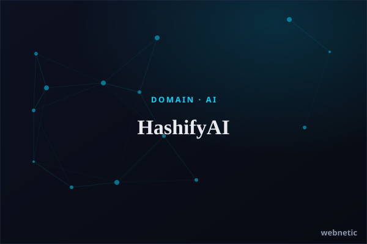

AI · Landing Page · OpenAI
HashifyAI
For HashifyAI, Webnetic Digital Solutions paired a sharp premium-domain landing page with an embedded GPT-powered assistant that answers visitor questions about the domain instantly — turning an otherwise static page into an interactive, AI-driven experience.
hashifyai.com